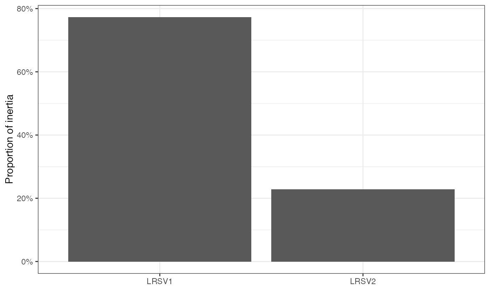
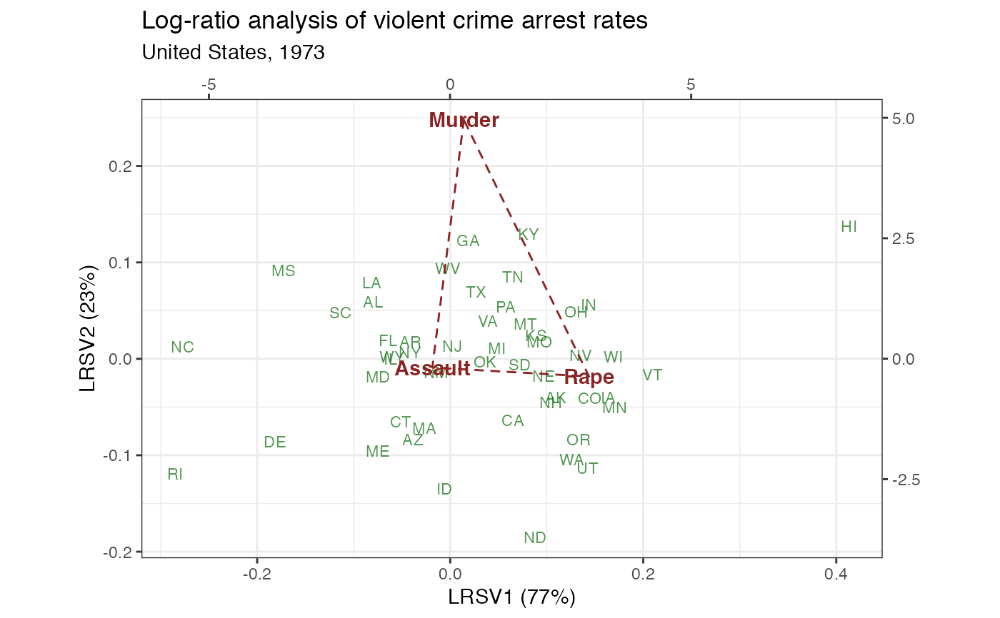

methods-lra.RdThese methods extract data from, and attribute new data to,
objects of class "lra", a class introduced in this package to organize
the singular value decomposition of a double-centered log-transformed data
matrix output by lra().
# S3 method for lra as_tbl_ord(x) # S3 method for lra recover_rows(x) # S3 method for lra recover_cols(x) # S3 method for lra recover_inertia(x) # S3 method for lra recover_coord(x) # S3 method for lra recover_conference(x) # S3 method for lra augmentation_rows(x) # S3 method for lra augmentation_cols(x) # S3 method for lra augmentation_coord(x)
| x | An ordination object. |
|---|
#> [1] "data.frame"#> Murder Assault UrbanPop Rape #> Alabama 13.2 236 58 21.2 #> Alaska 10.0 263 48 44.5 #> Arizona 8.1 294 80 31.0 #> Arkansas 8.8 190 50 19.5 #> California 9.0 276 91 40.6 #> Colorado 7.9 204 78 38.7# get state abbreviation data state <- data.frame( .name = state.name, .abb = state.abb ) # compute (non-compositional, unweighted) log-ratio analysis USArrests %>% subset(select = -UrbanPop) %>% lra() %>% as_tbl_ord() %>% print() -> arrests_lra#> # A tbl_ord of class 'lra': (50 x 2) x (3 x 2)' #> # 2 coordinates: LRSV1 and LRSV2 #> # #> # Rows (standard): [ 50 x 2 | 0 ] #> LRSV1 LRSV2 | #> | #> 1 -0.680 0.930 | #> 2 0.930 -0.625 | #> 3 -0.330 -1.31 | #> 4 -0.351 0.277 | #> 5 0.552 -1.00 | #> #> # #> # Columns (standard): [ 3 x 2 | 0 ] #> LRSV1 LRSV2 | #> | #> 1 0.283 4.96 | #> 2 -0.371 -0.181 | #> 3 2.88 -0.366 |#> # A tibble: 1 x 5 #> rank n.row n.col inertia class #> <int> <int> <int> <dbl> <chr> #> 1 2 50 2 0.0179 lra# augment log-ratio profiles with names and join state abbreviations arrests_lra %>% augment_ord() %>% left_join_rows(state, by = ".name") %>% print() -> arrests_lra#> # A tbl_ord of class 'lra': (50 x 2) x (3 x 2)' #> # 2 coordinates: LRSV1 and LRSV2 #> # #> # Rows (standard): [ 50 x 2 | 2 ] #> LRSV1 LRSV2 | .name .abb #> | <chr> <chr> #> 1 -0.680 0.930 | 1 Alabama AL #> 2 0.930 -0.625 | 2 Alaska AK #> 3 -0.330 -1.31 | 3 Arizona AZ #> 4 -0.351 0.277 | 4 Arkansas AR #> 5 0.552 -1.00 | 5 California CA #> # … with 45 more rows #> # #> # Columns (standard): [ 3 x 2 | 1 ] #> LRSV1 LRSV2 | .name #> | <chr> #> 1 0.283 4.96 | 1 Murder #> 2 -0.371 -0.181 | 2 Assault #> 3 2.88 -0.366 | 3 Rape#> LRSV1 LRSV2 #> Alabama -0.6800120 0.9296011 #> Alaska 0.9299899 -0.6245772 #> Arizona -0.3298496 -1.3115817 #> Arkansas -0.3513443 0.2773231 #> California 0.5516590 -1.0042801 #> Colorado 1.2291066 -0.6388469#> LRSV1 LRSV2 #> Murder 0.283086 4.9570302 #> Assault -0.370595 -0.1805698 #> Rape 2.876702 -0.3660163#> # A tibble: 2 x 3 #> .name .inertia .prop_var #> <fct> <dbl> <dbl> #> 1 LRSV1 0.0138 0.772 #> 2 LRSV2 0.00407 0.228# scree plot of inertia tidy(arrests_lra) %>% ggplot(aes(x = .name, y = .inertia)) + theme_bw() + geom_col() + labs(x = "", y = "Inertia")# scree plot of proportion of variance (inertia) tidy(arrests_lra) %>% ggplot(aes(x = .name, y = .prop_var)) + theme_bw() + scale_y_continuous(labels = scales::percent) + geom_col() + labs(x = "", y = "Proportion of inertia")# fortification adds all above columns fortify(arrests_lra)#> # A tibble: 53 x 5 #> LRSV1 LRSV2 .name .abb .matrix #> <dbl> <dbl> <chr> <chr> <chr> #> 1 -0.680 0.930 Alabama AL rows #> 2 0.930 -0.625 Alaska AK rows #> 3 -0.330 -1.31 Arizona AZ rows #> 4 -0.351 0.277 Arkansas AR rows #> 5 0.552 -1.00 California CA rows #> 6 1.23 -0.639 Colorado CO rows #> 7 -0.436 -1.03 Connecticut CT rows #> 8 -1.54 -1.35 Delaware DE rows #> 9 -0.547 0.300 Florida FL rows #> 10 0.158 1.92 Georgia GA rows #> # … with 43 more rows#> [1] 0 0# row-principal biplot with coordinate-wise standard deviations arrests_lra %>% confer_inertia(1) %>% ggbiplot(aes(color = .matrix), sec.axes = "cols", scale.factor = 1/20) + scale_color_manual(values = c("brown4", "darkgreen")) + theme_bw() + geom_rows_text(aes(label = .abb), size = 3, alpha = 2/3) + geom_cols_polygon(fill = NA, linetype = "dashed") + geom_cols_text(aes(label = .name), fontface = "bold") + ggtitle( "Log-ratio analysis of violent crime arrest rates", "United States, 1973" ) + guides(color = FALSE, size = FALSE)